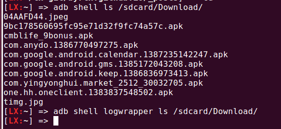

Android Log 系统
Table of Contents
In memory of those days in MTK
Logcat
这篇文章介绍android系统中录log的工具 logcat.
Android 系统提供了一整套的API供Java层和Native层的程序写log,以方便调试及在系统出问题的时候有据可查. 而logcat是把这些抓log的工具,可以通过logcat把log显示到标准输出或文件中,同时还可以对log进行过滤. 设定log level及只读取指定module的log. logcat 的详细用法可以在手机中输入"logcat –help" 命令查看.
本文主要对logcat的源码进行分析,从main函数开始.从main函数开始遇到的第一个函数调用是.
g_logformat = android_log_format_new();
看下这个函数的定义:
/* android_log_format_new()*/ AndroidLogFormat *android_log_format_new() { AndroidLogFormat *p_ret; p_ret = calloc(1, sizeof(AndroidLogFormat)); p_ret->global_pri = ANDROID_LOG_VERBOSE; p_ret->format = FORMAT_BRIEF; return p_ret; }
这个函数通过malloc生成一个 AndroidLogFormat 的结构体,并将结构体的成员变量 'global_pri' 和 'format' 设置.先省略这个结构体的实现,继续看main 函数的代码.
/* main()*/ if (argc == 2 && 0 == strcmp(argv[1], "--test")) { logprint_run_tests(); exit(0); }
test 参数
如果logcat只有一个参数"--test",则执行logprint_run_tests()函数,从代码来看,这个函数主要是测试logcat的功能的. /* logprint_run_tests()*/ p_format = android_log_format_new(); fprintf(stderr, "running tests\n"); tag = "random"; android_log_addFilterRule(p_format,"*:i"); 这个函数开始也call了一次 android_log_format_new()分配了一个结构体.并设置了tag变量,tag是每个module在打log时都需要设置一个tag,可以通过tag用来标志是该module输出的log. 接着call函数 android_log_addFilterRule(), 设置logcat的过滤机制. /* android_log_addFilterRule() */ android_LogPriority pri = ANDROID_LOG_DEFAULT; tagNameLength = strcspn(filterExpression, ":"); if(filterExpression[tagNameLength] == ':') { pri = filterCharToPri(filterExpression[tagNameLength+1]); if (pri == ANDROID_LOG_UNKNOWN) { goto error; } } 该函数设置pri变量的值为 ANDROID_LOG_DEFAULT, 这个值被定义在一个enum中,如果log pririoty被设为 ANDROID_LOG_DEFAULT, 则表示输出所有等级的log.接着获得filter的tag的长度,根据前面的参数,"*:i"的返回结果是1, 接着调用filterCharToPri(),并传入参数"i" . 这个函数把传入的字符形式的log level 转换为数字level,这些level和 ANDROID_LOG_DEFAULT一起定义在enum中. } else if (c == 'i') { pri = ANDROID_LOG_INFO; /* define */ enum { ANDROID_LOG_UNKNOWN = 0, ANDROID_LOG_DEFAULT, /* only for SetMinPriority() */ ANDROID_LOG_VERBOSE, ANDROID_LOG_DEBUG, ANDROID_LOG_INFO, ANDROID_LOG_WARN, ANDROID_LOG_ERROR, ANDROID_LOG_FATAL, ANDROID_LOG_SILENT, /* only for SetMinPriority(); must be last */ 接下来判断是否有设置全局的log level,即传入的filter中是否包含"*:x"的字符串,如果是的话,就设置一个全局性的log level /* android_log_addFilterRule() */ if(0 == strncmp("*", filterExpression, tagNameLength)) { if (pri == ANDROID_LOG_DEFAULT) { pri = ANDROID_LOG_DEBUG; } p_format->global_pri = pri; 这样,runtest()函数的filter设置就完成了,剩下都是一些基本的检查语句检查设置有没有成功. assert (ANDROID_LOG_INFO == filterPriForTag(p_format, "random")); 这条语句检查tag "random"的priority是否是ANDROID_LOG_INFO,看下 filterPriForTag()函数实现 static android_LogPriority filterPriForTag( AndroidLogFormat *p_format, const char *tag) { FilterInfo *p_curFilter; for (p_curFilter = p_format->filters ; p_curFilter != NULL ; p_curFilter = p_curFilter->p_next ) { if (0 == strcmp(tag, p_curFilter->mTag)) { if (p_curFilter->mPri == ANDROID_LOG_DEFAULT) { return p_format->global_pri; } else { return p_curFilter->mPri; } } } return p_format->global_pri; } 这段code很直观,首先遍历p_format的filter,检查有没有设置tag的priority, 如果没有找到,就返回全局的log level. 还有另一个需要检查的地方 assert(android_log_shouldPrintLine(p_format, tag, ANDROID_LOG_DEBUG) == 0); 在android中每条log都对应要一个priority,这个函数检查相应tag的这条log是否应该打印出来. int android_log_shouldPrintLine ( AndroidLogFormat *p_format, const char *tag, android_LogPriority pri) { return pri >= filterPriForTag(p_format, tag); } 通过filterPriForTag()函数查找该tag的priority,然后跟传入的level做比较,判断是否需要打印该tag该level级别的log. 同时,可以通过 android_log_addFilterString()设定多个log filter. err = android_log_addFilterString(p_format, "*:s random:d "); int android_log_addFilterString(AndroidLogFormat *p_format, const char *filterString) { // Yes, I'm using strsep while (NULL != (p_ret = strsep(&p_cur, " \t,"))) { // ignore whitespace-only entries if(p_ret[0] != '\0') { err = android_log_addFilterRule(p_format, p_ret); } } ...... } android_log_addFilterString()会循环遍历传入的filter string,并将其添加到filter 链表中. ok, "--test" 参数到这里就讲完了.
"-s" 参数
将全局的log level 设为 ANDROID_LOG_SILENT, 即不输出所有level的log
android_log_addFilterRule(g_logformat, "*:s");
"-c" 参数
该参数可以将log device中的log删除.
case 'c': clearLog = 1; mode = O_WRONLY; break;
if (clearLog) { int ret; ret = android::clearLog(dev->fd);
看下clearLog函数
static int clearLog(int logfd) { return ioctl(logfd, LOGGER_FLUSH_LOG); }
该函数向driver层下发 LOGGER_FLUSH_LOG 命令,告诉logger device的driver将logger中的log清除,关于logger device的实现在后面会讲到.
"-d" "-t N" 参数
这两个参数都会将g_nonblock变量设为true,表示把logger里的log读完就会立刻退出,而不会等待新log的写入. 同时"-t"参数后面还要跟着一个值N,表示只读最近的N条log.
"-g" 参数
给driver发送LOGGER_GET_LOG_BUF_SIZE, 获得logger device的大小.
"-b device" 参数
指定要从哪个buffer中读log, "-b"可以使用多次,例如" -b main -b radio"
"-B" 参数
以二进制方式打印log(目前默认会对log进行解析,以字符串形式打印)
"-f file" 参数
将log 输出到指定文件 file
"-r size" 参数
设定rotate size大小,rotate size 的含义是每种log 最多只有 size 大小. 录满后旧log会被覆盖
"-n num" 参数
设定每种log最大的log file数量,每个file的大小为 rotate_size/num
"-v format" 参数
设定输出的log 格式
err = setLogFormat (optarg); static int setLogFormat(const char * formatString) { static AndroidLogPrintFormat format;
format = android_log_formatFromString(formatString); android_log_setPrintFormat(g_logformat, format);
return 0; }
AndroidLogPrintFormat android_log_formatFromString(const char * formatString) { static AndroidLogPrintFormat format;
if (strcmp(formatString, "brief") = 0) format = FORMAT_BRIEF;
else if (strcmp(formatString, "process") = 0) format = FORMAT_PROCESS;
else if (strcmp(formatString, "tag") = 0) format = FORMAT_TAG;
else if (strcmp(formatString, "thread") = 0) format = FORMAT_THREAD;
else if (strcmp(formatString, "raw") = 0) format = FORMAT_RAW;
else if (strcmp(formatString, "time") = 0) format = FORMAT_TIME;
else if (strcmp(formatString, "threadtime") = 0) format = FORMAT_THREADTIME;
else if (strcmp(formatString, "long") = 0) format = FORMAT_LONG;
else format = FORMAT_OFF;
return format; }
第一个函数把字符串形式的format转换成整形表示,第二个参数把转换后的format设置到全局变量g_logformat中
OK, 到此为止,参数部分就解析完毕.接着执行下面的代码
如果没有指定"-b"参数的话,会默认打开 "main" 和 "system" 两个logger device
if (!devices) { devices = new log_device_t(strdup("dev"LOGGER_LOG_MAIN), false, 'm'); android::g_devCount = 1; int accessmode = (mode & O_RDONLY) ? R_OK : 0
| (mode & O_WRONLY) ? W_OK : 0; |
if (0 == access("dev"LOGGER_LOG_SYSTEM, accessmode)) { devices->next = new log_device_t(strdup("dev"LOGGER_LOG_SYSTEM), false, 's'); android::g_devCount++; } }
接下来是设定输出,如果没有指定"-f file"参数,默认输出到标准输出,否则打开file 文件.
static void setupOutput() {
if (g_outputFileName == NULL) { g_outFD = STDOUT_FILENO; } else { struct stat statbuf; g_outFD = openLogFile (g_outputFileName); fstat(g_outFD, &statbuf); g_outByteCount = statbuf.st_size; } }
如果有设定log filter的话,会解析字符串并加入到g_logformat的filter链表中
for (int i = optind ; i < argc ; i++) { err = android_log_addFilterString(g_logformat, argv[i]);
接下来会打开logger device,然后就是读log了.
android::readLogLines(devices);
读log
readLogLines()函数通过一个while loop不停的从kernel 层的logger device中读取log
while (1) {
do {
timeval timeout = { 0, 5000 * 5ms * }; // If we oversleep it's ok, i.e. ignore EINTR.
FD_ZERO(&readset);
for (dev=devices; dev; dev = dev->next) {
FD_SET(dev->fd, &readset);
}
result = select(max + 1, &readset, NULL, NULL, sleep ? NULL : &timeout);
} while (result = -1 && errno = EINTR);
这里有设一个timeout,最开始这个值为false,标志一直等待有log产生. 如果为true, 表示这段时间内没有新的log产生,则会把以及读出来的log全部flush到输出.
如果select()返回,会检查是否有logger device可读,并尝试从device中读取一条log.
if (result >= 0) { for (dev=devices; dev; dev = dev->next) { if (FD_ISSET(dev->fd, &readset)) { queued_entry_t* entry = new queued_entry_t(); ret = read(dev->fd, entry->buf, LOGGER_ENTRY_MAX_LEN);
logger device read() 的实现是每次读取一条logger_entry, 并存放到结构体queued_entry_t 的成员变量 buf 中,queued_entry_t 的定义如下:
struct queued_entry_t { union { unsigned char buf[LOGGER_ENTRY_MAX_LEN + 1] __attribute__((aligned(4))); struct logger_entry entry __attribute__((aligned(4))); }; queued_entry_t* next; queued_entry_t() { next = NULL; } };
可以看到buf和logger_entry被定义成union结构,所以读到buffer的内容同时是一条logger_entry. 该结构体的定义如下
struct logger_entry { uint16_t len; /* length of the payload */ uint16_t __pad; /* no matter what, we get 2 bytes of padding */ int32_t pid; /* generating process's pid */ int32_t tid; /* generating process's tid */ int32_t sec; /* seconds since Epoch */ int32_t nsec; /* nanoseconds */ char msg[0]; /* the entry's payload */ };
第一个变量len是字符串msg的长度,所以read()函数返回后会对返回值和len的值做比较,如果不相等,表示读的数据有错误.
else if (entry->entry.len != ret - sizeof(struct logger_entry)) { fprintf(stderr, "read: unexpected length. Expected %d, got %d\n", entry->entry.len, ret - sizeof(struct logger_entry)); exit(EXIT_FAILURE); }
接着会call device变量dev的enqueue()函数把刚读出来的log插入到dev的entry list中,并排序.
void enqueue(queued_entry_t* entry) { if (this->queue == NULL) { this->queue = entry; } else { queued_entry_t** e = &this->queue; while (*e && cmp(entry, *e) >= 0) { e = &((*e)->next); } entry->next = *e; *e = entry; } } static int cmp(queued_entry_t* a, queued_entry_t* b) { int n = a->entry.sec - b->entry.sec; if (n != 0) { return n; } return a->entry.nsec - b->entry.nsec; }
插入的算法是从链表头开始已有entry与新entry的时间戳,如果新entry的产生时间比较晚,就继续与下一个entry比较. 其实理论上讲,晚到来的log总是产生时间晚的log,所以这种比较的比较次数一般要大于从尾部开始比较. 另外值得一提的是比较算法采用了指针的指针,比较简洁,避免插入时链表头的判断. Linus大婶曾经在一次访谈中说道"这才是指针的真正用法"…….
接下来会打印log,需要说明的是没读出一次log就会判断是否需要打印log. 如果是select超时返回,会打印所有"需要"打印的log(这里加所有是因为如果使用"t"参数的话,只会打印最新的几条log),否则,会打印除最后一条log以外的所有log,剩一条log是为了下次时间戳的比较.
while (g_tail_lines == 0 || queued_lines > g_tail_lines) { chooseFirst(devices, &dev); if (dev == NULL || dev->queue->next == NULL) { break; } if (g_tail_lines == 0) { printNextEntry(dev); } else { skipNextEntry(dev); } --queued_lines;
chooseFirst()函数会把device链表中包含最新log的device选出来,这样对于多种类型的log输出到同一个文件的case,可以保证log按时间排序.
static void chooseFirst(log_device_t* dev, log_device_t** firstdev) { for (*firstdev = NULL; dev != NULL; dev = dev->next) { if (dev->queue != NULL && (*firstdev == NULL || cmp(dev->queue, (*firstdev)->queue) < 0)) { *firstdev = dev; } } }
接着就是call printNextEntry()进行log输出.
static void printNextEntry(log_device_t* dev) { maybePrintStart(dev); if (g_printBinary) { printBinary(&dev->queue->entry); } else { processBuffer(dev, &dev->queue->entry); } skipNextEntry(dev); }
如果中指定了"B"参数,log将不会被解析,直接以二进制的方式输出,否则,调用 processBuffer()对log entry进行解析.
if (dev->binary) { err = android_log_processBinaryLogBuffer(buf, &entry, g_eventTagMap, binaryMsgBuf, sizeof(binaryMsgBuf)); //printf(">>> pri=%d len=%d msg='%s'\n", // entry.priority, entry.messageLen, entry.message); } else { err = android_log_processLogBuffer(buf, &entry); }
android log system目前有四种类型的log: main, system, radio, event. 其中前三种可以分为同一类型,log可以通过android_log_processLogBuffer()直接解析成人类可以读懂的文字. event log则稍有不同,解析后的log也要通过相应的文件才能读懂. 这里主要看一下常规log的解析.
android_log_processLogBuffer()的参数有两个,第一个是logger_entry变量,第二个是AndroidLogEntry变量,其实这两个结构体的内容大致相同,只不过后一个包含的信息更多一些.
struct logger_entry { uint16_t len; /* length of the payload */ uint16_t __pad; /* no matter what, we get 2 bytes of padding */ int32_t pid; /* generating process's pid */ int32_t tid; /* generating process's tid */ int32_t sec; /* seconds since Epoch */ int32_t nsec; /* nanoseconds */ char msg[0]; /* the entry's payload */ }; typedef struct AndroidLogEntry_t { time_t tv_sec; long tv_nsec; android_LogPriority priority; int32_t pid; int32_t tid; const char * tag; size_t messageLen; const char * message; } AndroidLogEntry; int android_log_processLogBuffer(struct logger_entry *buf, AndroidLogEntry *entry) { entry->tv_sec = buf->sec; entry->tv_nsec = buf->nsec; entry->pid = buf->pid; entry->tid = buf->tid; int msgStart = -1; int msgEnd = -1; int i; for (i = 1; i < buf->len; i++) { if (buf->msg[i] == '\0') { if (msgStart == -1) { msgStart = i + 1; } else { msgEnd = i; break; } } } entry->priority = buf->msg[0]; entry->tag = buf->msg + 1; entry->message = buf->msg + msgStart; entry->messageLen = msgEnd - msgStart; return 0; }
可以看到转换函数主要是把logger_entry的msg给分割成三个部分:priority, tag, message.
接着会调用android_log_shouldPrintLine()检查该该tag及该level的log是否应该被打印,如果是,则调用android_log_printLogLine()打印.
/* android_log_printLogLine() */ outBuffer = android_log_formatLogLine(p_format, defaultBuffer, sizeof(defaultBuffer), entry, &totalLen); do { ret = write(fd, outBuffer, totalLen); } while (ret < 0 && errno == EINTR); ...... if (outBuffer != defaultBuffer) { free(outBuffer); } 前面讲过可以通过参数"-v"设置打印的log格式,所以android_log_formatLogLine()的作用就是将entry 转换为最终的打印格式. /* android_log_formatLogLine() */ priChar = filterPriToChar(entry->priority); ptm = localtime(&(entry->tv_sec)); strftime(timeBuf, sizeof(timeBuf), "%m-%d %H:%M:%S", ptm); size_t prefixLen, suffixLen; switch (p_format->format) { case FORMAT_TAG: prefixLen = snprintf(prefixBuf, sizeof(prefixBuf), "%c/%-8s: ", priChar, entry->tag); strcpy(suffixBuf, "\n"); suffixLen = 1; break; case FORMAT_PROCESS: prefixLen = snprintf(prefixBuf, sizeof(prefixBuf), "%c(%5d) ", priChar, entry->pid); suffixLen = snprintf(suffixBuf, sizeof(suffixBuf), " (%s)\n", entry->tag); break; case FORMAT_THREAD: prefixLen = snprintf(prefixBuf, sizeof(prefixBuf), "%c(%5d:%5d) ", priChar, entry->pid, entry->tid); strcpy(suffixBuf, "\n"); suffixLen = 1; break; case FORMAT_RAW: prefixBuf[0] = 0; prefixLen = 0; strcpy(suffixBuf, "\n"); suffixLen = 1; break; case FORMAT_TIME: prefixLen = snprintf(prefixBuf, sizeof(prefixBuf), "%s.%03ld %c/%-8s(%5d): ", timeBuf, entry->tv_nsec / 1000000, priChar, entry->tag, entry->pid); strcpy(suffixBuf, "\n"); suffixLen = 1; break; case FORMAT_THREADTIME: prefixLen = snprintf(prefixBuf, sizeof(prefixBuf), "%s.%03ld %5d %5d %c %-8s: ", timeBuf, entry->tv_nsec / 1000000, entry->pid, entry->tid, priChar, entry->tag); strcpy(suffixBuf, "\n"); suffixLen = 1; break; case FORMAT_LONG: prefixLen = snprintf(prefixBuf, sizeof(prefixBuf), "[ %s.%03ld %5d:%5d %c/%-8s ]\n", timeBuf, entry->tv_nsec / 1000000, entry->pid, entry->tid, priChar, entry->tag); strcpy(suffixBuf, "\n\n"); suffixLen = 2; prefixSuffixIsHeaderFooter = 1; break; case FORMAT_BRIEF: default: prefixLen = snprintf(prefixBuf, sizeof(prefixBuf), "%c/%-8s(%5d): ", priChar, entry->tag, entry->pid); strcpy(suffixBuf, "\n"); suffixLen = 1; break; } size_t numLines; size_t i; char *p; size_t bufferSize; const char *pm; ret[0] = '\0'; /* to start strcat off */ p = ret; pm = entry->message;
首先会将数字格式的priority转为字符格式,接着生成格式化时间字符串.然后进入switch判断当前的format形式,并生成对应的prefix. 因为snprintf/vsnprintf有个特点:虽然它们最多只会向buffer写入指定长度的字符串(也就是说,如果buffer不足,字符串会被截断),但是,它们的返回值确是理想情况下(buffer足够大)可以写入的字符串长度.所以程序接下来会判断返回值跟buffer size是否相等.
/* android_log_formatLogLine() */ if(prefixLen >= sizeof(prefixBuf)) prefixLen = sizeof(prefixBuf) - 1; if(suffixLen >= sizeof(suffixBuf)) suffixLen = sizeof(suffixBuf) - 1; 接着会遍历msg中的"\n"判断该条log需要分几行打出,每行打出的log都会有prefix字符串 /* android_log_formatLogLine() */ if (prefixSuffixIsHeaderFooter) { numLines = 1; } else { pm = entry->message; numLines = 0; while (pm < (entry->message + entry->messageLen)) { if (*pm++ == '\n') numLines++; } if (pm > entry->message && *(pm-1) != '\n') numLines++; }
在函数参数中已经传入了存log的buffer,但是,如果需要打印的log 长度超过了buffer size,则系统会重新malloc一个新的buffer,记住:这个buffer需要在函数外free掉!!!!(logcat的做法是判断函数返回值是否等于传入的buffer,如果不是,则表示有新buffer malloc,就会free掉)
/* android_log_formatLogLine() */ bufferSize = (numLines * (prefixLen + suffixLen)) + entry->messageLen + 1; if (defaultBufferSize >= bufferSize) { ret = defaultBuffer; } else { ret = (char *)malloc(bufferSize); if (ret == NULL) { return ret; } } /* android_log_printLogLine() */ if (outBuffer != defaultBuffer) { free(outBuffer); }
最后是生成最终的log字符串.对于"long"格式的log format来讲,prefix只需打印一次,所以不需要遍历msg中的"\n".否则,对于每行log都要加上prefix.
if (prefixSuffixIsHeaderFooter) { strcat(p, prefixBuf); p += prefixLen; strncat(p, entry->message, entry->messageLen); p += entry->messageLen; strcat(p, suffixBuf); p += suffixLen; } else { while(pm < (entry->message + entry->messageLen)) { const char *lineStart; size_t lineLen; lineStart = pm; // Find the next end-of-line in message while (pm < (entry->message + entry->messageLen) && *pm != '\n') pm++; lineLen = pm - lineStart; strcat(p, prefixBuf); p += prefixLen; strncat(p, lineStart, lineLen); p += lineLen; strcat(p, suffixBuf); p += suffixLen; if (*pm == '\n') pm++; } } if (p_outLength != NULL) { *p_outLength = p - ret; } return ret;
函数返回后,就把最终字符串写到输出.
OK,logcat的用法及实现流程到这里就基本结束了.
Liblog
Androi系统提供了一套完整的API供其他程序调用输出log,这套API分为Java 层和 native 层,不过两个API最终都是通过file system将log写入kernel 层的logger device.
ALOGX 系列
以native层为例,如果我们要开发'.cpp'或'.c'程序,那么可以call下列API之以写出不同level的log
#define LOG_TAG "HeloWorld" ALOGV("hello world,level verbose"); ALOGD("hello world,level debug"); ALOGI("hello world,level info"); ALOGE("hello world,level error"); ALOGW("hello world,level warning");
这里通常都需要定义一个LOG_TAG, 作为一个完整log的一部分,可以唯一的定位一个module. ALOGX()系列API的实现通过宏定位到共同的一组函数.
#ifndef ALOGE #define ALOGE(...) ((void)ALOG(LOG_ERROR, LOG_TAG, __VA_ARGS__)) #endif #ifndef ALOG #define ALOG(priority, tag, ...) \ LOG_PRI(ANDROID_##priority, tag, __VA_ARGS__) #endif #ifndef LOG_PRI #define LOG_PRI(priority, tag, ...) \ android_printLog(priority, tag, __VA_ARGS__) #endif #define android_printLog(prio, tag, fmt...) \ __android_log_print(prio, tag, fmt) int __android_log_print(int prio, const char *tag, const char *fmt, ...) { va_list ap; char buf[LOG_BUF_SIZE]; va_start(ap, fmt); vsnprintf(buf, LOG_BUF_SIZE, fmt, ap); va_end(ap); return __android_log_write(prio, tag, buf); }
__android_log_print()通过va_list变量把format形式字符串生成最终的字符串,然后调用__android_log_write(),这里的参数tag就是之前定义的 LOG_TAG. 而prio是一个整数值,中[logcat](../Android-logcat/)讲到过,最后通过logcat抓出来后,会将整形log level转换为字符型.
int __android_log_write(int prio, const char *tag, const char *msg) { struct iovec vec[3]; log_id_t log_id = LOG_ID_MAIN; if (!tag) tag = ""; /* XXX: This needs to go! */ if (!strcmp(tag, "HTC_RIL") || !strncmp(tag, "RIL", 3) || /* Any log tag with "RIL" as the prefix */ !strncmp(tag, "IMS", 3) || /* Any log tag with "IMS" as the prefix */ !strcmp(tag, "AT") || !strcmp(tag, "GSM") || !strcmp(tag, "STK") || !strcmp(tag, "CDMA") || !strcmp(tag, "PHONE") || !strcmp(tag, "SMS")) log_id = LOG_ID_RADIO; vec[0].iov_base = (unsigned char *) &prio; vec[0].iov_len = 1; vec[1].iov_base = (void *) tag; vec[1].iov_len = strlen(tag) + 1; vec[2].iov_base = (void *) msg; vec[2].iov_len = strlen(msg) + 1; return write_to_log(log_id, vec, 3); }
Android log 系统目前有四种类型的log:main,system,radio,events. 后三种一般都是系统的一些特殊的log,除此之外,自己开发的程序,log都默认写到main中. 所以程序最开始把 log_id 设为 LOG_ID_MAIN. 不过程序接下来会判断tag参数,如果tag符合radio log的规则的话,则将log_id改为 LOG_ID_RADIO. 接着把传入的三个参数放到一个iovec变量中. 并调用write_to_log()
struct iovec { const void* iov_base; size_t iov_len; }; static int (*write_to_log)(log_id_t, struct iovec *vec, size_t nr) = __write_to_log_init;
write_to_log()是一个指针函数,这里的实现用了一点小伎俩. 最开始这个指针就被赋值为__write_to_log_init, 所以,在第一次调用该函数的时候,调用的就是 __write_to_log_init()
static int __write_to_log_init(log_id_t log_id, struct iovec *vec, size_t nr) { #ifdef HAVE_PTHREADS pthread_mutex_lock(&log_init_lock); #endif if (write_to_log == __write_to_log_init) { log_fds[LOG_ID_MAIN] = log_open("/dev/"LOGGER_LOG_MAIN, O_WRONLY); log_fds[LOG_ID_RADIO] = log_open("/dev/"LOGGER_LOG_RADIO, O_WRONLY); log_fds[LOG_ID_EVENTS] = log_open("/dev/"LOGGER_LOG_EVENTS, O_WRONLY); log_fds[LOG_ID_SYSTEM] = log_open("/dev/"LOGGER_LOG_SYSTEM, O_WRONLY); write_to_log = __write_to_log_kernel; if (log_fds[LOG_ID_MAIN] < 0 || log_fds[LOG_ID_RADIO] < 0 || log_fds[LOG_ID_EVENTS] < 0) { log_close(log_fds[LOG_ID_MAIN]); log_close(log_fds[LOG_ID_RADIO]); log_close(log_fds[LOG_ID_EVENTS]); log_fds[LOG_ID_MAIN] = -1; log_fds[LOG_ID_RADIO] = -1; log_fds[LOG_ID_EVENTS] = -1; write_to_log = __write_to_log_null; } if (log_fds[LOG_ID_SYSTEM] < 0) { log_fds[LOG_ID_SYSTEM] = log_fds[LOG_ID_MAIN]; } } #ifdef HAVE_PTHREADS pthread_mutex_unlock(&log_init_lock); #endif return write_to_log(log_id, vec, nr); }
之所以要这样做,是因为在系统开启后第一次写通过ALOGX函数写log的时候,kernel 层的logger device还未被打开,所以要将这些device都打开,然后,将write_to_log改成__write_to_log_kernel. 在函数的最后,接着再调用一次write_to_log(),这次调用的就是__write_log_log_kernel 了.
static int __write_to_log_kernel(log_id_t log_id, struct iovec *vec, size_t nr) { ssize_t ret; int log_fd; if (/*(int)log_id >= 0 &&*/ (int)log_id < (int)LOG_ID_MAX) { log_fd = log_fds[(int)log_id]; } else { return EBADF; } do { ret = log_writev(log_fd, vec, nr); } while (ret < 0 && errno == EINTR); return ret; }
函数将log_id转为log_fd后,就直接调用 log_writev()函数
#define log_writev(filedes, vector, count) writev(filedes, vector, count)
log_writev()就被映射到具体的driver层的writev()函数.这样,一条log就被写入到了kernel层的device中.
SLOGX
SLOGX()API族用于生成system log,log被写到system这个logger device中,SLOGX的实现跟main log基本相同,只是默认的log id是system而不是main
#define SLOGV(...) ((void)__android_log_buf_print(LOG_ID_SYSTEM, ANDROID_LOG_VERBOSE, LOG_TAG, __VA_ARGS__)) int __android_log_buf_print(int bufID, int prio, const char *tag, const char *fmt, ...) { va_list ap; char buf[LOG_BUF_SIZE]; va_start(ap, fmt); vsnprintf(buf, LOG_BUF_SIZE, fmt, ap); va_end(ap); return __android_log_buf_write(bufID, prio, tag, buf); } int __android_log_buf_write(int bufID, int prio, const char *tag, const char *msg) { struct iovec vec[3]; if (!tag) tag = ""; /* XXX: This needs to go! */ if (!strcmp(tag, "HTC_RIL") || !strncmp(tag, "RIL", 3) || /* Any log tag with "RIL" as the prefix */ !strncmp(tag, "IMS", 3) || /* Any log tag with "IMS" as the prefix */ !strcmp(tag, "AT") || !strcmp(tag, "GSM") || !strcmp(tag, "STK") || !strcmp(tag, "CDMA") || !strcmp(tag, "PHONE") || !strcmp(tag, "SMS")) bufID = LOG_ID_RADIO; vec[0].iov_base = (unsigned char *) &prio; vec[0].iov_len = 1; vec[1].iov_base = (void *) tag; vec[1].iov_len = strlen(tag) + 1; vec[2].iov_base = (void *) msg; vec[2].iov_len = strlen(msg) + 1; return write_to_log(bufID, vec, 3); }
Events Log
Events log是一种特殊的log,经常被用来记录系统的一些参数:例如电池的当前状态,剩余电量……等等
Java层写event log的api为 writeEvent(),不过系统有四种该函数的实现.
public static native int writeEvent(int tag, int value); public static native int writeEvent(int tag, long value); public static native int writeEvent(int tag, String str); public static native int writeEvent(int tag, Object... list);
系统会根据模块中call api时传入的参数对应调用不同的writeEvent()函数.这些函数分别对应到不同的JNI实现.首先看下参数为int/long时的JNI实现.
static jint android_util_EventLog_writeEvent_Integer(JNIEnv* env, jobject clazz, jint tag, jint value) { return android_btWriteLog(tag, EVENT_TYPE_INT, &value, sizeof(value)); } static jint android_util_EventLog_writeEvent_Long(JNIEnv* env, jobject clazz, jint tag, jlong value) { return android_btWriteLog(tag, EVENT_TYPE_LONG, &value, sizeof(value)); }
这两个函数调用了一个共同的函数 android_btWriteLog()
#define android_btWriteLog(tag, type, payload, len) __android_log_btwrite(tag, type, payload, len) int __android_log_btwrite(int32_t tag, char type, const void *payload, size_t len) { struct iovec vec[3]; vec[0].iov_base = &tag; vec[0].iov_len = sizeof(tag); vec[1].iov_base = &type; vec[1].iov_len = sizeof(type); vec[2].iov_base = (void*)payload; vec[2].iov_len = len; return write_to_log(LOG_ID_EVENTS, vec, 3); }
是不是很熟悉?没错,最后跟main log流程一样,都调用write_to_log(0函数. 下面是参数为string时的JNI实现:
static jint android_util_EventLog_writeEvent_String(JNIEnv* env, jobject clazz, jint tag, jstring value) { uint8_t buf[MAX_EVENT_PAYLOAD]; const char *str = value != NULL ? env->GetStringUTFChars(value, NULL) : "NULL"; jint len = strlen(str); const int max = sizeof(buf) - sizeof(len) - 2; // Type byte, final newline if (len > max) len = max; buf[0] = EVENT_TYPE_STRING; memcpy(&buf[1], &len, sizeof(len)); memcpy(&buf[1 + sizeof(len)], str, len); buf[1 + sizeof(len) + len] = '\n'; if (value != NULL) env->ReleaseStringUTFChars(value, str); return android_bWriteLog(tag, buf, 2 + sizeof(len) + len); }
该函数把type,string长度,string都放到了同一个buffer中,然后call android_bWriteLog()
int __android_log_bwrite(int32_t tag, const void *payload, size_t len) { struct iovec vec[2]; vec[0].iov_base = &tag; vec[0].iov_len = sizeof(tag); vec[1].iov_base = (void*)payload; vec[1].iov_len = len; return write_to_log(LOG_ID_EVENTS, vec, 2); }
该函数与__android_log_bwrite的不同是后者是把type(int/long)跟payload分开的,而该函数放到了一起.
writeEvent的第四种形式:写入的是int/long/string的组合体,则会循环遍历该组合,转换成格式化字符串放到同一个buffer中.
static jint android_util_EventLog_writeEvent_Array(JNIEnv* env, jobject clazz, jint tag, jobjectArray value) { uint8_t buf[MAX_EVENT_PAYLOAD]; const size_t max = sizeof(buf) - 1; // leave room for final newline size_t pos = 2; // Save room for type tag & array count jsize copied = 0, num = env->GetArrayLength(value); for (; copied < num && copied < 255; ++copied) { jobject item = env->GetObjectArrayElement(value, copied); if (item == NULL || env->IsInstanceOf(item, gStringClass)) { if (pos + 1 + sizeof(jint) > max) break; const char *str = item != NULL ? env->GetStringUTFChars((jstring) item, NULL) : "NULL"; jint len = strlen(str); if (pos + 1 + sizeof(len) + len > max) len = max - pos - 1 - sizeof(len); buf[pos++] = EVENT_TYPE_STRING; memcpy(&buf[pos], &len, sizeof(len)); memcpy(&buf[pos + sizeof(len)], str, len); pos += sizeof(len) + len; if (item != NULL) env->ReleaseStringUTFChars((jstring) item, str); } else if (env->IsInstanceOf(item, gIntegerClass)) { jint intVal = env->GetIntField(item, gIntegerValueID); if (pos + 1 + sizeof(intVal) > max) break; buf[pos++] = EVENT_TYPE_INT; memcpy(&buf[pos], &intVal, sizeof(intVal)); pos += sizeof(intVal); } else if (env->IsInstanceOf(item, gLongClass)) { jlong longVal = env->GetLongField(item, gLongValueID); if (pos + 1 + sizeof(longVal) > max) break; buf[pos++] = EVENT_TYPE_LONG; memcpy(&buf[pos], &longVal, sizeof(longVal)); pos += sizeof(longVal); } else { jniThrowException(env, "java/lang/IllegalArgumentException", "Invalid payload item type"); return -1; } env->DeleteLocalRef(item); } buf[0] = EVENT_TYPE_LIST; buf[1] = copied; buf[pos++] = '\n'; return android_bWriteLog(tag, buf, pos); }
最后同样是调用函数 android_bWriteLog()
Logger
Logcat 和 Liblog 这两篇文章,讲到了android系统中如何读log和写log. 那么,log存放的位置在哪里? 本文就介绍一下android 系统中存放log的地方: logger device.
Android 在 kernel 层提供了四个虚拟的device 设备,用于存放log. 可以通过输入 `adb shell ls /dev/log/` 来查看系统的虚拟logger 设备. 这些设备是在系统启动的时候以内核模块的方式初始化.
device_initcall(logger_init); static int __init logger_init(void) { int ret; ret = create_log(LOGGER_LOG_MAIN, 256*1024); if (unlikely(ret)) goto out; ret = create_log(LOGGER_LOG_EVENTS, 256*1024); if (unlikely(ret)) goto out; ret = create_log(LOGGER_LOG_RADIO, 256*1024); if (unlikely(ret)) goto out; ret = create_log(LOGGER_LOG_SYSTEM, 256*1024); if (unlikely(ret)) goto out; out: return ret; }
模块初始话函数通过create_log()生成四个device,并指定了每个device的大小.
static int __init create_log(char *log_name, int size) { int ret = 0; struct logger_log *log; unsigned char *buffer; buffer = vmalloc(size); if (buffer == NULL) return -ENOMEM; log = kzalloc(sizeof(struct logger_log), GFP_KERNEL); if (log == NULL) { ret = -ENOMEM; goto out_free_buffer; } log->buffer = buffer; log->misc.minor = MISC_DYNAMIC_MINOR; log->misc.name = kstrdup(log_name, GFP_KERNEL); if (log->misc.name == NULL) { ret = -ENOMEM; goto out_free_log; } log->misc.fops = &logger_fops; log->misc.parent = NULL; init_waitqueue_head(&log->wq); INIT_LIST_HEAD(&log->readers); mutex_init(&log->mutex); log->w_off = 0; log->head = 0; log->size = size; INIT_LIST_HEAD(&log->logs); list_add_tail(&log->logs, &log_list); /* finally, initialize the misc device for this log */ ret = misc_register(&log->misc); if (unlikely(ret)) { pr_err("failed to register misc device for log '%s'!\n", log->misc.name); goto out_free_log; } pr_info("created %luK log '%s'\n", (unsigned long) log->size >> 10, log->misc.name); return 0; out_free_log: kfree(log); out_free_buffer: vfree(buffer); return ret; } 对于每一个logger device,都对应一个核心的结构体: struct logger_log. create_log()函数的作用就是分配一个logger_log,初始化其变量,并通过misc_register()注册为misc设备. 对于之前介绍的 [logcat](../Android-logcat/) 和 [liblog](../Android-liblog/), 讲到都是通过read()/write()函数来读写log, read/write的实现则对应到driver层注册到file system的 fops. log->misc.fops = &logger_fops; static const struct file_operations logger_fops = { .owner = THIS_MODULE, .read = logger_read, .aio_write = logger_aio_write, .poll = logger_poll, .unlocked_ioctl = logger_ioctl, .compat_ioctl = logger_ioctl, .open = logger_open, .release = logger_release, };
打开Logger设备
在应用层通过调用open("/dev/log/main",O_RDWR)的方式可以打开一个logger设备,对应的kernel 层的实现是logger_open.
/* logger_open() */ log = get_log_from_minor(MINOR(inode->i_rdev)); if (!log) return -ENODEV; if (file->f_mode & FMODE_READ) { struct logger_reader *reader; reader = kmalloc(sizeof(struct logger_reader), GFP_KERNEL); if (!reader) return -ENOMEM; reader->log = log; reader->r_ver = 1; reader->r_all = in_egroup_p(inode->i_gid) || capable(CAP_SYSLOG); INIT_LIST_HEAD(&reader->list); mutex_lock(&log->mutex); reader->r_off = log->head; list_add_tail(&reader->list, &log->readers); mutex_unlock(&log->mutex); file->private_data = reader; } else file->private_data = log;
通过传入的inode节点的次设备号从log_list链表中找到对应的logger device的结构体. 接着会判断打开方式,如果打开方式中包含"read"(例如logcat)的话,会分配一个logger_read结构体被赋值给file的private_data变量,同时会把reader的读开始位置设为logger buffer的head位置(也就是从头开始读),然后把reader加入到logger的reader链表中.否则file的private_data变量直接指向logger.
读logger
read()函数对应logger_read.
.read = logger_read, static ssize_t logger_read(struct file *file, char __user *buf, size_t count, loff_t *pos) { struct logger_reader *reader = file->private_data; struct logger_log *log = reader->log; ssize_t ret; DEFINE_WAIT(wait); start: while (1) { mutex_lock(&log->mutex); prepare_to_wait(&log->wq, &wait, TASK_INTERRUPTIBLE); ret = (log->w_off == reader->r_off); mutex_unlock(&log->mutex); if (!ret) break; if (file->f_flags & O_NONBLOCK) { ret = -EAGAIN; break; } if (signal_pending(current)) { ret = -EINTR; break; } schedule(); } finish_wait(&log->wq, &wait); if (ret) return ret;
首先程序会在一个while循环中做一些判断:如果w_off不等于r_off,表明目前logger中有log可读,跳出循环.否则,如果设备以非阻塞的方式打开,直接返回 -EAGAIN 的错误. 如果程序被信号打断,则返回 -EINTR. 如果这些条件都不满足,表示目前没有log可读,调用schedule()让出cpu.
/*logger_read()*/ mutex_lock(&log->mutex); if (!reader->r_all) reader->r_off = get_next_entry_by_uid(log, reader->r_off, current_euid()); /* is there still something to read or did we race? */ if (unlikely(log->w_off == reader->r_off)) { mutex_unlock(&log->mutex); goto start; }
r_all部分目前还不太理解,以后再补充…..(从代码来看,这个变量应该是与reader的权限有关,通过这个变量可以控制该reader是否有权限去读所有的log, 如果为0,表明reader没有该权限,只能读自己进程euid相等的log)
/*logger_read()*/ ret = get_user_hdr_len(reader->r_ver) + get_entry_msg_len(log, reader->r_off); if (count < ret) { ret = -EINVAL; goto out; }
通过get_user_hdr_len()及get_entry_msg_len()获取entry的header长度和entry长度,加起来就是一条log的长度.
static size_t get_user_hdr_len(int ver) { if (ver < 2) return sizeof(struct user_logger_entry_compat); else return sizeof(struct logger_entry); }
该函数会根据传入的reader成员r_ver的值来决定返回哪个长度的entry header值,因为在logger_open中该值被设定为1, 故该函数的返回值为 user_logger_entry_compat 的长度. 接着读取log entry的长度.
static __u32 get_entry_msg_len(struct logger_log *log, size_t off) { struct logger_entry scratch; struct logger_entry *entry; entry = get_entry_header(log, off, &scratch); return entry->len; } static struct logger_entry *get_entry_header(struct logger_log *log, size_t off, struct logger_entry *scratch) { size_t len = min(sizeof(struct logger_entry), log->size - off); if (len != sizeof(struct logger_entry)) { memcpy(((void *) scratch), log->buffer + off, len); memcpy(((void *) scratch) + len, log->buffer, sizeof(struct logger_entry) - len); return scratch; } return (struct logger_entry *) (log->buffer + off); }
因为每个logger device的size都是固定大小,而系统中的log量要远远大于该size,故logger device都是采用 ring buffer的方式存放log. 这样就可能出现这个的情况,一条log的一部分在buffer尾部,而另一部分在buffer头部,所以每次从buffer读log都要考虑这种情况. 获得entry之后,通过entry的变量len就可以知道msg的长度. 调用 do_read_log_to_user()将entry+msg写到user的buf中.
ret = do_read_log_to_user(log, reader, buf, ret);
Log write
之前有讲,user space在写log的流程最后调用到了write()函数,对应到driver层的实现为 logger_aio_write(). 让我们一段一段的分析这个函数的实现.
static ssize_t logger_aio_write(struct kiocb *iocb, const struct iovec *iov, unsigned long nr_segs, loff_t ppos) { struct logger_log *log = file_get_log(iocb->ki_filp); size_t orig = log->w_off; struct logger_entry header; struct timespec now; ssize_t ret = 0;
首先是调用file_get_log()函数获得这个文件结构体对应的logger设备. 在打开设备的代码中有讲,file结构体的private_data变量会存放两个值之一:logger或reader,所以这里会判断文件是否以FMODE_READ的方式打开,如果是,则private_data为reader,需要去reader中找logger,否则直接返回private_data.
static inline struct logger_log *file_get_log(struct file *file) { if (file->f_mode & FMODE_READ) { struct logger_reader *reader = file->private_data; return reader->log; } else return file->private_data; }
下面的代码通过系统参数初始化log entry的header.
now = current_kernel_time(); header.pid = current->tgid; header.tid = current->pid; header.sec = now.tv_sec; header.nsec = now.tv_nsec; header.euid = current_euid(); header.len = min_t(size_t, iocb->ki_left, LOGGER_ENTRY_MAX_PAYLOAD); header.hdr_size = sizeof(struct logger_entry); /* null writes succeed, return zero */ if (unlikely(!header.len)) return 0; mutex_lock(&log->mutex);
接下来调用fix_up_readers()函数,通过传入本次log的长度对该logger设备的readers进行修正.
/* * Fix up any readers, pulling them forward to the first readable * entry after (what will be) the new write offset. We do this now * because if we partially fail, we can end up with clobbered log * entries that encroach on readable buffer. */ fix_up_readers(log, sizeof(struct logger_entry) + header.len); static void fix_up_readers(struct logger_log *log, size_t len) { size_t old = log->w_off; size_t new = logger_offset(log, old + len); struct logger_reader *reader; if (is_between(old, new, log->head)) log->head = get_next_entry(log, log->head, len); list_for_each_entry(reader, &log->readers, list) if (is_between(old, new, reader->r_off)) reader->r_off = get_next_entry(log, reader->r_off, len); } static size_t get_next_entry(struct logger_log *log, size_t off, size_t len) { size_t count = 0; do { size_t nr = sizeof(struct logger_entry) + get_entry_msg_len(log, off); off = logger_offset(log, off + nr); count += nr; } while (count < len); return off; }
为什么要对reader进行修正?前面有讲过,logger buffer的size是固定的,系统采用ring buffer的方式写log,那么就会出现这样的情况,最新的logger会有机会覆盖前面的一条log,那么在这种情况下,对于reader来说,r_off这个参数就是无效的,因为下一条log(或者后面几条log)已经不存在了.
get_next_entry()的实现不难理解,因为新加入的log长度为len,即寻找从r_off+len位置之后的第一条有效log.
接下来就是真正把log的内容写入buffer
do_write_log(log, &header, sizeof(struct logger_entry)); while (nr_segs-- > 0) { size_t len; ssize_t nr; /* figure out how much of this vector we can keep */ len = min_t(size_t, iov->iov_len, header.len - ret); /* write out this segment's payload */ nr = do_write_log_from_user(log, iov->iov_base, len); if (unlikely(nr < 0)) { log->w_off = orig; mutex_unlock(&log->mutex); return nr; } iov++; ret += nr; } mutex_unlock(&log->mutex); /* wake up any blocked readers */ wake_up_interruptible(&log->wq); return ret; }
首先会调用do_write_log()把header先写入buffer,这里直接调用memcpy(),header有可能被写到buffer的尾部和首部(ring buffer). 然后就是把user space传入的iovec数组的内容依次写入buffer. 如果写失败,会直接把logger的w_off位置roll back会之前的值.
logger_poll
在logcat的实现中曾讲到,logcat在打开logger设备后,会调用select()函数监控该logger设备,如果函数返回,表明有log可读,接下来就会调用read()读log.这里select对应的driver层函数就是logger_poll()
static unsigned int logger_poll(struct file *file, poll_table *wait) { struct logger_reader *reader; struct logger_log *log; unsigned int ret = POLLOUT | POLLWRNORM; if (!(file->f_mode & FMODE_READ)) return ret; reader = file->private_data; log = reader->log; poll_wait(file, &log->wq, wait); mutex_lock(&log->mutex); if (!reader->r_all) reader->r_off = get_next_entry_by_uid(log, reader->r_off, current_euid()); if (log->w_off != reader->r_off) ret |= POLLIN | POLLRDNORM; mutex_unlock(&log->mutex); return ret; }
函数首先会判断是否以read的方式打开设备,如果不是,直接返回.(因为select()一般对应读操作,如果不读那么select()就没什么意义了).判断log是否可读的唯一条件就是w_off是否等于r_off.
OK,logger设备暂时就写到这里,以后有新的理解会继续补充.
Logwrapper
严格来讲，logwrapper并不属于之前写的Android的Log体系（ logger.html、 liblog.html、 logcat.html ），但是呢，它多多少少又与这套体系有些关系，所以将其称之为“外传”。
什么是logwrapper？如果你写了一个android程序，使用了一些标准输出函数（printf）， 但是有时候你无法看到这些输出（例如你写了一个native开机启动程序， 那你应该没办法在adb shell中看到你的输出吧）。 那么使用logwrapper可以将你的程序的标准输出重定向到android log或kernel log中， 就像是你调用了这些log函数(ALOGI或printk）一样。
例如，你在adb shell中输入‘logwrapper ls’， 终端上不会显示任何内容，ls的输出被重定向到了logger中， 通过logcat命令把logger的内容抓到文件中，可以看到ls的输出。 如下图。
使用logwrapper后，ls的结果没有输出到标准输出。

在logcat抓的log中发现了上面ls命令的结果。

clogwrapper 代码
logwrapper的代码位于 system/core/logwrapper目录。在最新的4.4.2_r1版本中，该模块增加到了三个源文件， （原来只有logwrapper.c这支文件）。首先看一下该模块的makefile文件Android.mk。
LOCAL_PATH:= $(call my-dir) include $(CLEAR_VARS) # ======================================================== # Static library # ======================================================== include $(CLEAR_VARS) LOCAL_MODULE := liblogwrap LOCAL_SRC_FILES := logwrap.c LOCAL_SHARED_LIBRARIES := libcutils liblog LOCAL_EXPORT_C_INCLUDE_DIRS := $(LOCAL_PATH)/include LOCAL_C_INCLUDES := $(LOCAL_PATH)/include include $(BUILD_STATIC_LIBRARY) # ======================================================== # Shared library # ======================================================== include $(CLEAR_VARS) LOCAL_MODULE := liblogwrap LOCAL_SHARED_LIBRARIES := libcutils liblog LOCAL_WHOLE_STATIC_LIBRARIES := liblogwrap LOCAL_EXPORT_C_INCLUDE_DIRS := $(LOCAL_PATH)/include LOCAL_C_INCLUDES := $(LOCAL_PATH)/include include $(BUILD_SHARED_LIBRARY) # ======================================================== # Executable # ======================================================== include $(CLEAR_VARS) LOCAL_SRC_FILES:= logwrapper.c LOCAL_MODULE := logwrapper LOCAL_STATIC_LIBRARIES := liblog liblogwrap libcutils include $(BUILD_EXECUTABLE)
从Android可以看出，在编译时，先将logwrap.c文件编译成一个动态库liblogwrap， 然后再将该动态库编译成静态库liblogwrap，最后将logwrapper.c编译成一个 可执行shell命令logwrapper。
既然上面的例子中有用到logwrapper这个命令，那先从其源代码看起。该文件的代码只有不到100行，主要的工作还是在logwrap.c中完成。先看一下main函数。
int main(int argc, char* argv[]) { .... while ((ch = getopt(argc, argv, "adk")) != -1) { switch (ch) { case 'a': abbreviated = true; break; case 'd': seg_fault_on_exit = 1; break; case 'k': log_target = LOG_KLOG; klog_set_level(6); break; case '?': default: usage(); } } argc -= optind; argv += optind; if (argc < 1) { usage(); } rc = android_fork_execvp_ext(argc, &argv[0], &status, true, log_target, abbreviated, NULL); .... }
首先通过getopt()函数获取命令行选项， 不同的选项会设置不同的变量。目前logwrapper支持三个命令行选项： -a，压缩logging，该选项只保留‘命令’输出的前4K和后4K内容。 -d，‘命令’完成后，logwrapper会SIGSEGV。 -k，将‘命令’输出写到kernel log（默认是写道Android Log）。 读完命令行选项后，接下来调用android_fork_execvp_ext()函数，这是logwrapper工作的核心函数。该函数的实现在logwrap.c中。
// int android_fork_execvp_ext(int argc, char* argv[], int *status, bool ignore_int_quit, int log_target, bool abbreviated, char *file_path) { ... rc = pthread_mutex_lock(&fd_mutex); if (rc) { ERROR("failed to lock signal_fd mutex\n"); goto err_lock; } /* Use ptty instead of socketpair so that STDOUT is not buffered */ parent_ptty = open("/dev/ptmx", O_RDWR); if (parent_ptty < 0) { ERROR("Cannot create parent ptty\n"); rc = -1; goto err_open; } if (grantpt(parent_ptty) || unlockpt(parent_ptty) || ((child_devname = (char*)ptsname(parent_ptty)) == 0)) { ERROR("Problem with /dev/ptmx\n"); rc = -1; goto err_ptty; } child_ptty = open(child_devname, O_RDWR); if (child_ptty < 0) { ERROR("Cannot open child_ptty\n"); rc = -1; goto err_child_ptty; }
程序的最开始会尝试去拿fd_mutex这个锁，目前还不清楚这么做的原因。
接下来会打开/dev/ptmx这个设备节点。并通过grantpt()、unlockpt()、ptsname() 这三个函数得到对/dev/ptmx进行相关操作。最后打开从设备。
“伪终端主设备/dev/ptmx是一个流的增殖设备。这意味着当我们打开该增殖设备， 其open例程自动决定第一个未被使用的伪终端主设备并打开这个设备。 同时，打开这个主设备会自动锁定对应的从设备。 grantpt函数用来改变从设备的权限。执行如下操作： （a）将从设备的所有权改为有效用户ID；（b）将组所有权改为组tty； （c）将权限改为只允许user-read，user-write和group-write。 函数unlockpt用来清除从设备的内部锁。在打开从设备前我们必须做这件事情。 通过调用ptsname来得到从设备的名称。这个名称的格式是/dev/pts/NNN。”
上面的内容是从相关资料中摘取的对这三个函数的解释， 针对logwrapper这个程序，我的理解就是，logwrapper程序使用一个主设备， 然后它执行的‘命令’使用一个从设备，则‘命令’的输出就会透过从设备反映给主设备。 logwrapper程序再把它写到相关文件中。
pid = fork(); if (pid < 0) { close(child_ptty); ERROR("Failed to fork\n"); rc = -1; goto err_fork; } else if (pid == 0) { pthread_mutex_unlock(&fd_mutex); pthread_sigmask(SIG_SETMASK, &oldset, NULL); close(parent_ptty); // redirect stdout and stderr dup2(child_ptty, 1); dup2(child_ptty, 2); close(child_ptty); child(argc, argv); } else { close(child_ptty); if (ignore_int_quit) { struct sigaction ignact; memset(&ignact, 0, sizeof(ignact)); ignact.sa_handler = SIG_IGN; sigaction(SIGINT, &ignact, &intact); sigaction(SIGQUIT, &ignact, &quitact); } rc = parent(argv[0], parent_ptty, pid, status, log_target, abbreviated, file_path); }
接着通过fork()出一个新的进程来执行‘命令’程序， 父进程和子进程分别执行parent和child函数，在子进程执行child函数之前， 会先将其stdout和stderr重定向到从设备上。这样父进程就可以接受’命令‘的输出了。
先来看下child()函数的实现。该函数的程序很简单，就是通过execvp()执行‘命令’。
static void child(int argc, char* argv[]) { // create null terminated argv_child array char* argv_child[argc + 1]; memcpy(argv_child, argv, argc * sizeof(char *)); argv_child[argc] = NULL; if (execvp(argv_child[0], argv_child)) { FATAL_CHILD("executing %s failed: %s\n", argv_child[0], strerror(errno)); } }
parent()实现就比较复杂一些。
// static int parent(const char *tag, int parent_read, pid_t pid, // int *chld_sts, int log_target, bool abbreviated, char *file_path) { ... struct pollfd poll_fds[] = { [0] = { .fd = parent_read, .events = POLLIN, }, }; struct log_info log_info; log_info.btag = basename(tag); if (!log_info.btag) { log_info.btag = (char*) tag; } if (abbreviated && (log_target == LOG_NONE)) { abbreviated = 0; } if (abbreviated) { init_abbr_buf(&log_info.a_buf); } if (log_target & LOG_KLOG) { snprintf(log_info.klog_fmt, sizeof(log_info.klog_fmt), "<6>%.*s: %%s", MAX_KLOG_TAG, log_info.btag); } if ((log_target & LOG_FILE) && !file_path) { /* No file_path specified, clear the LOG_FILE bit */ log_target &= ~LOG_FILE; } if (log_target & LOG_FILE) { fd = open(file_path, O_WRONLY | O_CREAT, 0664); if (fd < 0) { ERROR("Cannot log to file %s\n", file_path); log_target &= ~LOG_FILE; } else { lseek(fd, 0, SEEK_END); log_info.fp = fdopen(fd, "a"); } } log_info.log_target = log_target; log_info.abbreviated = abbreviated; while (!found_child) { if (TEMP_FAILURE_RETRY(poll(poll_fds, ARRAY_SIZE(poll_fds), -1)) < 0) { ERROR("poll failed\n"); rc = -1; goto err_poll; } if (poll_fds[0].revents & POLLIN) { sz = read(parent_read, &buffer[b], sizeof(buffer) - 1 - b); sz += b; // Log one line at a time for (b = 0; b < sz; b++) { if (buffer[b] == '\r') { if (abbreviated) { buffer[b] = '\n'; } else { buffer[b] = '\0'; } } else if (buffer[b] == '\n') { buffer[b] = '\0'; log_line(&log_info, &buffer[a], b - a); a = b + 1; } } if (a == 0 && b == sizeof(buffer) - 1) { // buffer is full, flush buffer[b] = '\0'; log_line(&log_info, &buffer[a], b - a); b = 0; } else if (a != b) { // Keep left-overs b -= a; memmove(buffer, &buffer[a], b); a = 0; } else { a = 0; b = 0; } } if (poll_fds[0].revents & POLLHUP) { int ret; ret = waitpid(pid, &status, WNOHANG); if (ret < 0) { rc = errno; ALOG(LOG_ERROR, "logwrap", "waitpid failed with %s\n", strerror(errno)); goto err_waitpid; } if (ret > 0) { found_child = true; } } }
parent()函数的主体是一个while()循环，当主设备中有数据可读时，将其读出， 并调用log_line()写入相应的log文件。
/* Log directly to the specified log */ static void do_log_line(struct log_info *log_info, char *line) { if (log_info->log_target & LOG_KLOG) { klog_write(6, log_info->klog_fmt, line); } if (log_info->log_target & LOG_ALOG) { ALOG(LOG_INFO, log_info->btag, "%s", line); } if (log_info->log_target & LOG_FILE) { fprintf(log_info->fp, "%s\n", line); } } /* Log to either the abbreviated buf, or directly to the specified log * via do_log_line() above. */ static void log_line(struct log_info *log_info, char *line, int len) { if (log_info->abbreviated) { add_line_to_abbr_buf(&log_info->a_buf, line, len); } else { do_log_line(log_info, line); } } static void add_line_to_abbr_buf(struct abbr_buf *a_buf, char *linebuf, int linelen) { if (!a_buf->beginning_buf_full) { a_buf->beginning_buf_full = add_line_to_linear_buf(&a_buf->b_buf, linebuf, linelen); } if (a_buf->beginning_buf_full) { add_line_to_circular_buf(&a_buf->e_buf, linebuf, linelen); } }
如果abbreviated没有被设置，则通过do_log_line()直接把log写入相应位置。 否则调用add_line_to_abbr_buf()，把log写入到log_info结构体的buf中。
if (chld_sts != NULL) { *chld_sts = status; } else { if (WIFEXITED(status)) rc = WEXITSTATUS(status); else rc = -ECHILD; } // Flush remaining data if (a != b) { buffer[b] = '\0'; log_line(&log_info, &buffer[a], b - a); } /* All the output has been processed, time to dump the abbreviated output */ if (abbreviated) { print_abbr_buf(&log_info); } if (WIFEXITED(status)) { if (WEXITSTATUS(status)) { snprintf(tmpbuf, sizeof(tmpbuf), "%s terminated by exit(%d)\n", log_info.btag, WEXITSTATUS(status)); do_log_line(&log_info, tmpbuf); } } else { if (WIFSIGNALED(status)) { snprintf(tmpbuf, sizeof(tmpbuf), "%s terminated by signal %d\n", log_info.btag, WTERMSIG(status)); do_log_line(&log_info, tmpbuf); } else if (WIFSTOPPED(status)) { snprintf(tmpbuf, sizeof(tmpbuf), "%s stopped by signal %d\n", log_info.btag, WSTOPSIG(status)); do_log_line(&log_info, tmpbuf); } } err_waitpid: err_poll: if (log_target & LOG_FILE) { fclose(log_info.fp); /* Also closes underlying fd */ } if (abbreviated) { free_abbr_buf(&log_info.a_buf); } return rc;